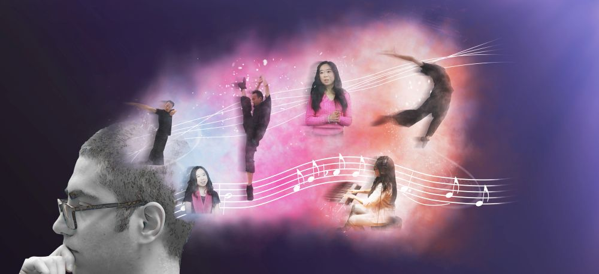
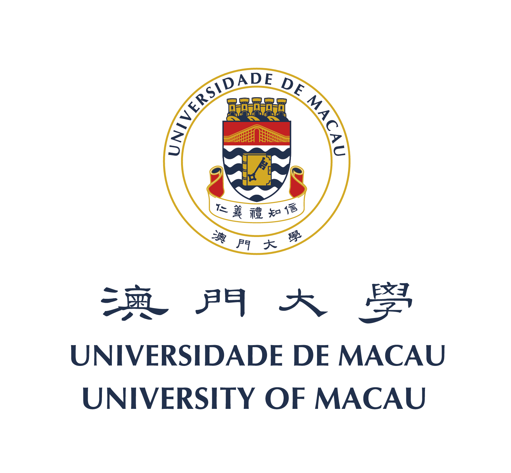

UM MOOC Promotion Article
创意Q&A
你是否有过这样的疑惑：
创意从何而来？
创意因何而生？
我要怎样做才能变得更具创意？
快来澳门大学的首门慕课——CRT101: 创意，与我们一探究竟吧！

（This picture would be changed to the course introduction video.）
这是一门怎样的课程？
随着传统工业逐渐走向没落，以知识和技术为主的产业渐渐的被人工智能和机器人所取代，权威人士和科学家们也推测这种趋势将会越来越严重。因此，培养面向新世纪具有创意和创新精神、实践能力、独立思考、领袖风范和团队精神的新型人才迫在眉睫。
我们的创意课程将创意的内容、特点、技术和思考模式融为一体地传授给你。在这种互动、互助、互探和互学的情境之下，你可以立即利用自己所学到的知识投入到你的生活中。我们团队中的心理学家、文学家和艺术家将带领大家走一段极具挑战性但充满趣味性的学习旅程！相信我们的课程将会令你耳目一新，帮助你挖掘蕴藏在大脑深处的“创意”，将平凡的你转化为非凡的你。

通过？周的学习，你将能够：
- 理解创意的元素、准则、框架等基本意涵
- 将“创意”的
- 做好准备迎接属于自己的“创意时刻”
- 成为一个更具创意的人！
我们是谁？

澳门大学创办于1981年，前身是私立东亚大学。经过37年的发展，已成为澳门本地区最优秀的唯一综合性公立大学。自创校以来，一直为澳门、国家和世界培养对社会有贡献的优秀人才。
学堂在线是清华大学发起建立的精品中文慕课平台，课程来自清华大学、北京大学、复旦大学、中国科技大学，以及麻省理工学院、斯坦福大学、加州大学伯克利分校等国内外一流大学，全面覆盖 12大学科门类。
由谁主讲？

(Paul Flower 摄)
艺术家：李自豪
加拿大多伦多大学教育博士
李自豪是澳门大学教育学院助理教授同时兼任澳大舞蹈团艺术总监。他源于艺术，将其拓展到教育学和科技教学领域。他曾是广东现代舞团、香港舞蹈团、德国汉堡芭蕾舞团的专业舞者。也曾在北京舞蹈学院、东京艺术中心、约克大学以及威斯康星大学麦迪逊分校和其他专业舞蹈团体任教。李教授是世界舞蹈联盟科技教育组长、北美和世界舞蹈联盟会议数字舞蹈节联合主席。他的研究跨越舞蹈教学法、跨文化学科、性别和男舞者、科技与移动教育。李自豪在国内外获得多项教学和艺术奖项。
文学家：王嘉祺
英国利玆大学英国文学博士
王嘉祺是澳门大学教与学优化中心主任、英文系副教授。研究领域包括剧场与音乐、英国文艺复兴戏剧、莎士比亚戏剧。其个人著作包括顶尖学术期刊文章、《文艺复兴时期英国戏剧中的音乐与性别》，合编有《澳门——文化互动和文学表现》等，并担任戴定澄著作《20世纪澳门天主教音乐——独特历史背景下的作曲者与作品》英文版责任编辑。最近被邀著专题文章，讨论莎士比亚性别与音乐以及莎士比亚在亚洲的题目，将由牛津大学出版社出版。
王嘉祺亦为歌唱家，任澳门嘤鸣合唱团指挥。
心理学家：Davood Gozli
多伦多大学试验心理学博士
Davood Gozli 于2015年在多伦多大学获取试验心理学博士学位。之后在荷兰莱顿大学作了短暂的博士后研究。2016年，Gozli加入澳门大学成为社会科学院助理教授。他研究领域广泛，但主要感兴趣的是运用试验心理学在一个大的参考框架中作为一种理解自己的方式去解读自己。

(Paul Flower 摄)
来吧！现在就和我们一起探索“创意”背后的奥秘，让我们一起“化平凡为非凡”！
Issues:
- This is a simplified version of our wechat article.
- The legth of our course is not clear in the article.
- UM & XuetangX Introduction.
- Seems that something around course objective should be added into the article.